What Makes a Song Popular?
A data story for analyzing and visualizing trends in popular music.

OVERVIEW
A d3-powered data story consisting of five visualizations that reveal audio feature trends within Billboard Top 100 songs. Created for a data visualization course at Harvard, CS 171, using a design sprint methodology and user testing.
CONTRIBUTIONS
For three months I worked with a team of 2 other undergraduates to design and develop our data story. I was responsible for the overall UX and UI design of the story as well as for developing two original data visualizations. Additionally, I collaborated with my teammates on overall debugging and narrative creation.
TOOLBOX & MORE
CSS/SCSS
HTML
D3.js
Oct - Dec 2020
MOTIVATION
Our project visualizes the wide range of music that has topped the charts from the past six decades. We would like to explore the top songs of each decade to understand what makes them so special. To do this, we researched how Spotify’s recommendation algorithm works and discovered several audio features that are attributed to songs that are recommended.
Initially, each team member focused on creating one or two visualizations. We collectively debugged and edited the visualizations after receiving user feedback. To create our data story we followed a design sprint methodology and conducted two think-aloud user studies. Our process as can be broken down into the following six steps:
MAP
Our raw data was taken from Billboard's Top 100 Database and Spotify's API and combined to
create a complete dataset containing song records and their corresponding audio features.
In the data cleaning process some songs were uncategorized or miscellaneous
in genre; we have chosen to exclude them.
Our data story assumes a general audience but was made with music lovers in mind and aims
to address to following questions:
How has the sound of Pop changed over time?
How has the popularity of genres changed over time?
Is there such a thing as “timelessness” in music?
SKETCH & STORYBOARD
In order to achieve the maximum breadth of ideas we rapidly brainstormed and drew visualizations to answer the aforementioned questions we wanted our data story to answer.
In the end we voted on several visualizations we believed had the most utility and could best progress the data story. We were left with four main visualizations: a bubble chart, a stacked area chart, a parallel coordinates chart and a radar chart. From here we selected our main message: to show the user what audio features make a song popular. Story board with visualizations, creating the narrative.
PROTOTYPE
I was responsible for developing the visual identity of the data story, and created a style guide
for our visualizations and for the overall narrative- which consisted of typography, color schemes
and landing screens. I also created the fixed progress bar navigation found on the left
to ease jumping between screens.
I was also responsible for creating the bubble chart and radar chart visualizations. Since
the bubble chart was the data story's initial visualization I opted for using a variety of colored
circled, each representing a song what has at some point reached the number one spot on the
Billboard Top 100 Chart and size relative to the number of weeks it was number one.
Users can hover over a circle to see more information about the song
and can filter the circles displayed by date range using the area chart slider.
The radar chart takes the average over each audio feature shown in the parallel coordinates
chart for each genre to create a "genre signature" to be displayed on the chart. Users can toggle
between genres using the dropdown.
TEST
What does testing tell us?
The purpose of the user testing was to find any discontinuities or ambiguity within our data story. We recruited two users to test our prototype using a think-aloud study: instructing them to go through the data story and voice out their navigation and concerns from each. These pain points were taken into account in the revision stage to make the data story more robust and responsive to user needs.
Users expected the bubble chart circles to be grouped by genre, and did not understand the connection of the area chart to the overall data story - not realizing it could be brushed.
The audio featured in our later visualizations are not amply explained to the user and directions take up too much screen space, distracting from the visualizations.
Users could not feasibly compare two different genres against each other on the current radar chart and the sidebar did not change with each section.
REVISE
1 Counter intuitive navigation.
Bubble chart circles are now more closely grouped, plain text instructions and audio feature definitions are now contained within pop-ups accessed by hovering over select buttons, and audio feature breakdowns were added to the last three visualizations.
2 Visually convoluted.
The genre radar chart was revised to allow comparison and an additional radar chart was added that displays song signatures for high and low levels of each audio feature.
3 Misplaced emphasis.
Placing the non-map task flows in bolded buttons visually misconstrues their significance to the current task flow and draws the user away from the map.
4 Misplaced emphasis.
Finally, audio was incorporated into the parallel coordinates and audio feature radar chart visualizations. Users can now hover over a song's line or signature and a clip of that song will play.
 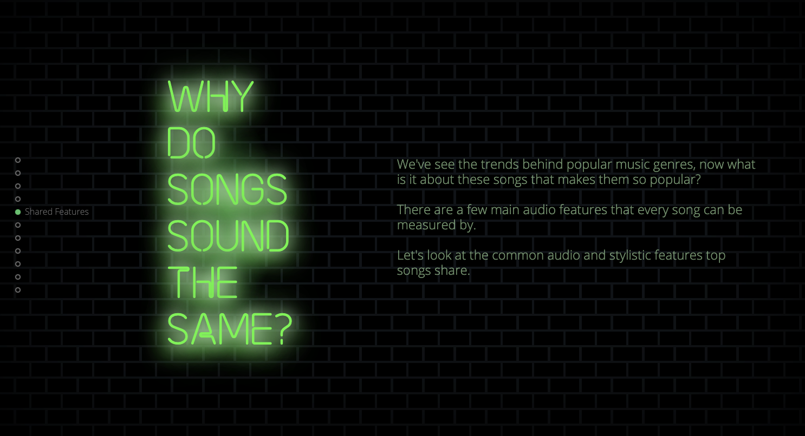
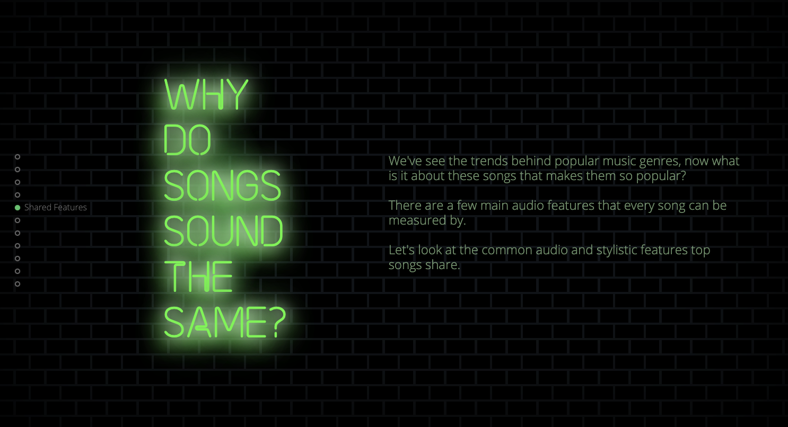
 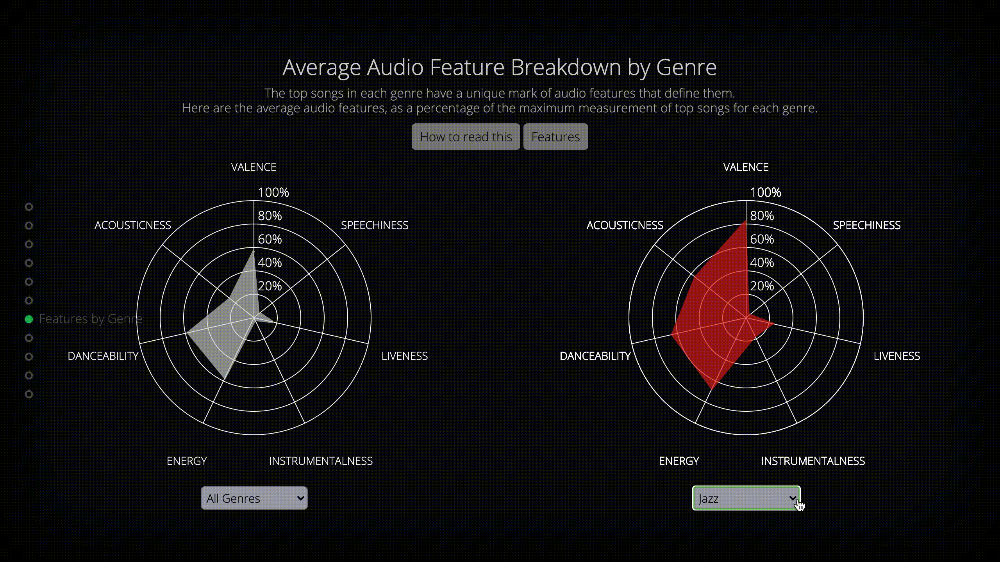
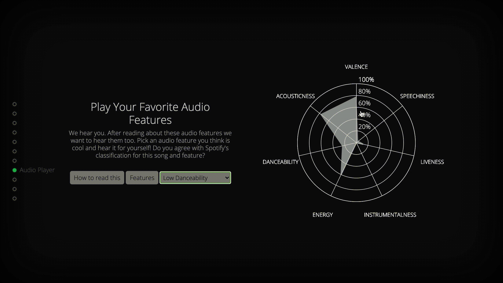
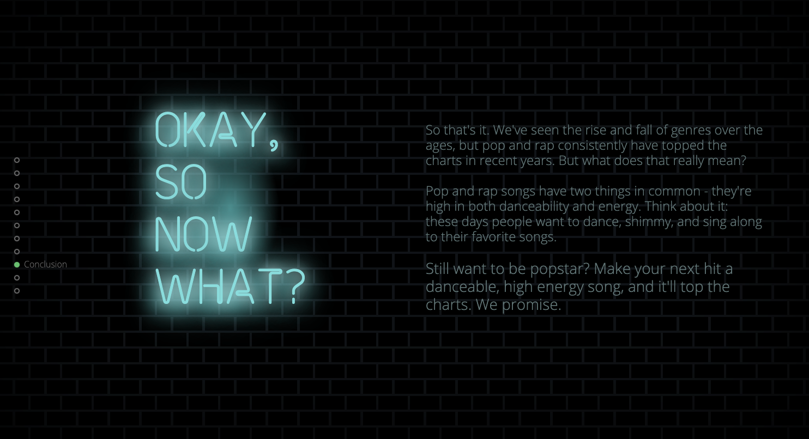
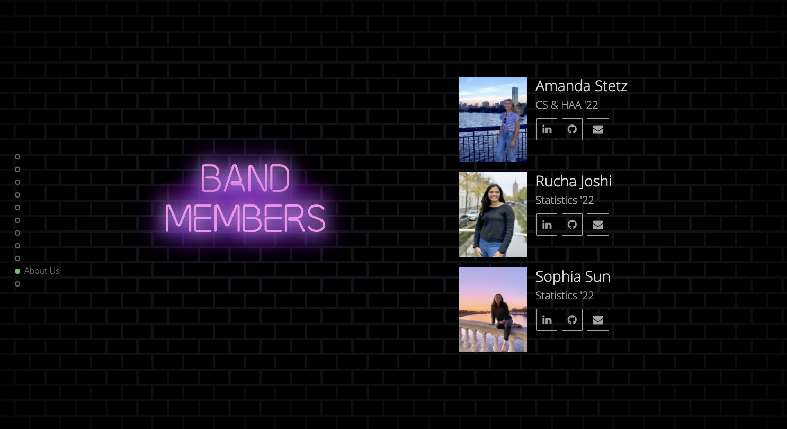
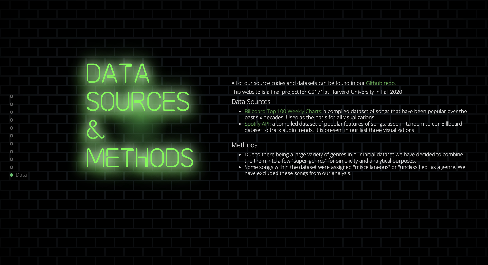
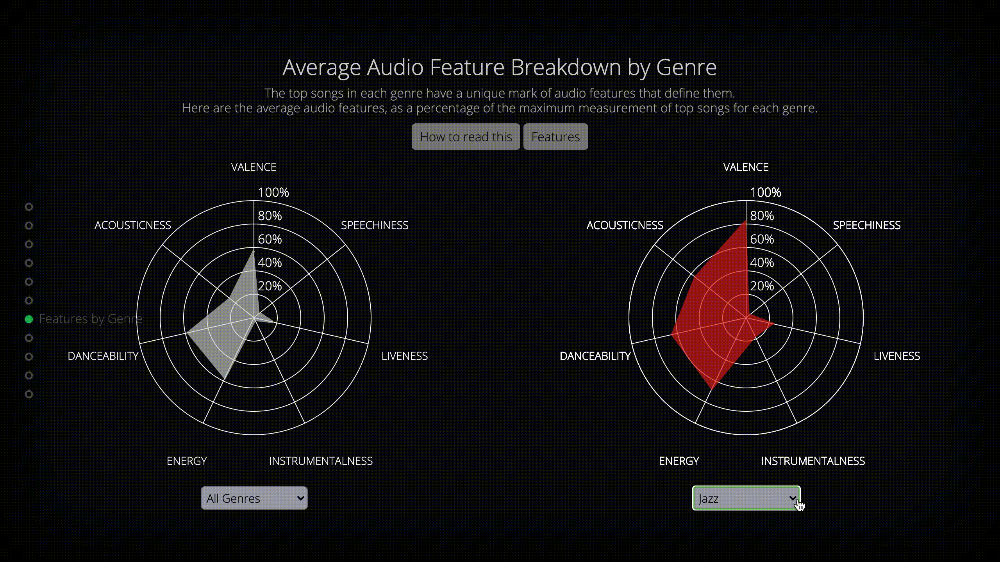
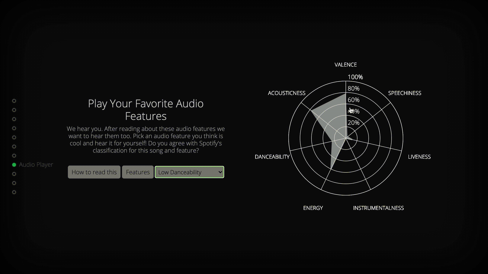
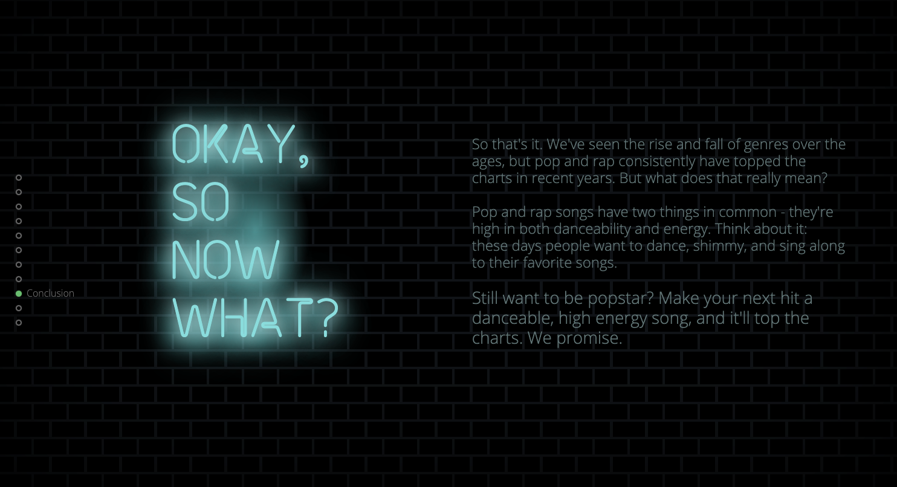
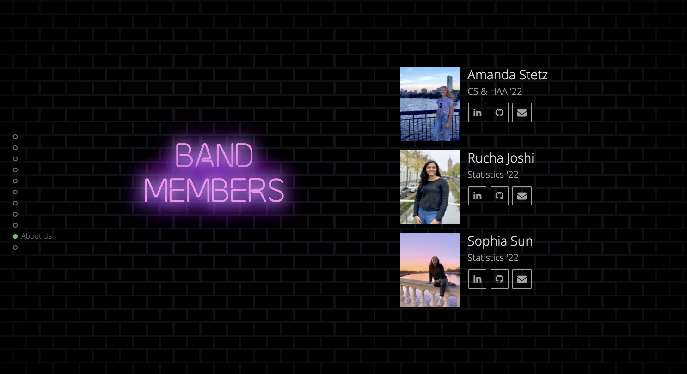
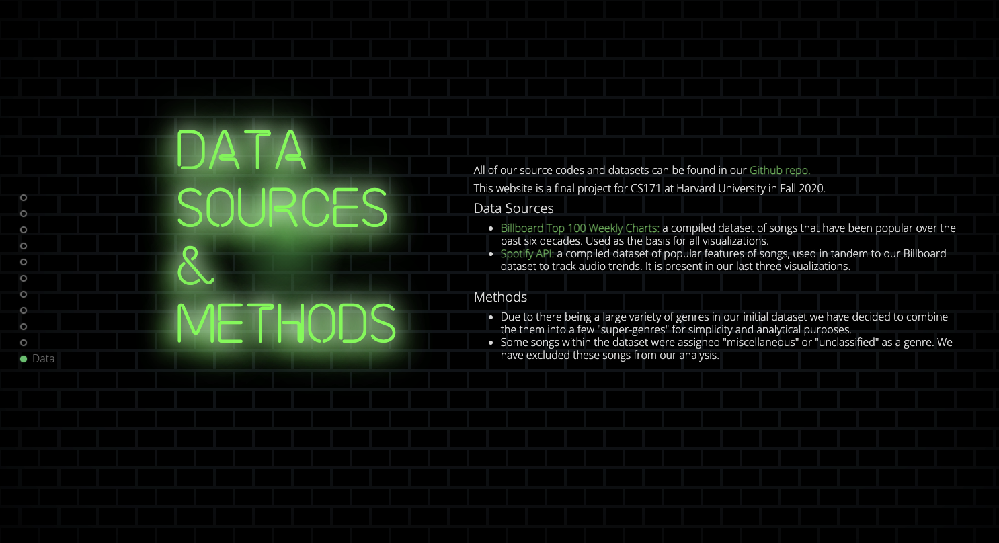